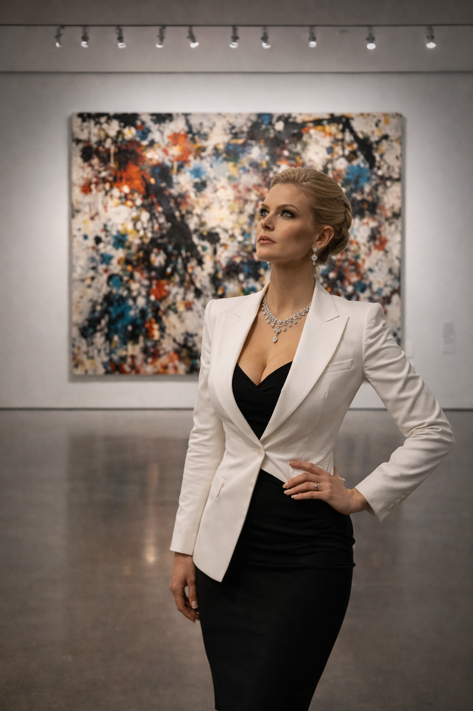
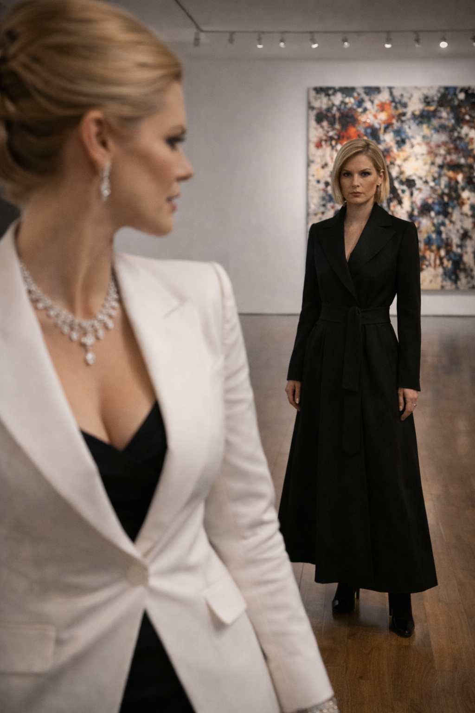
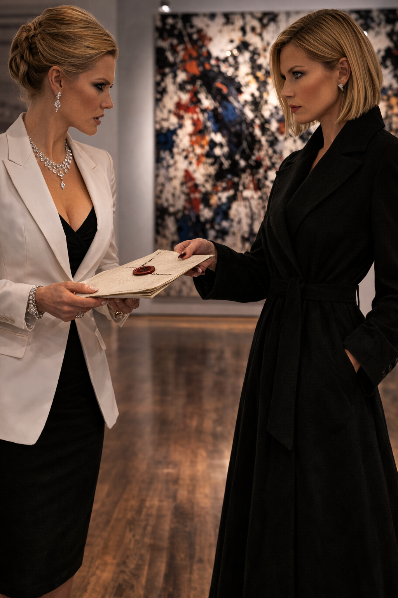
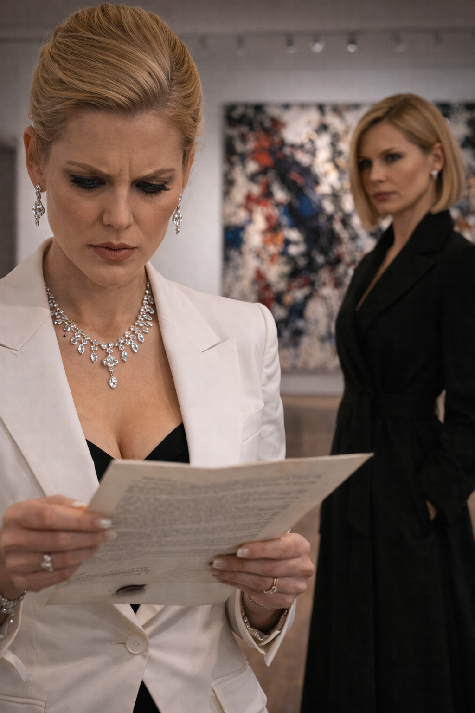
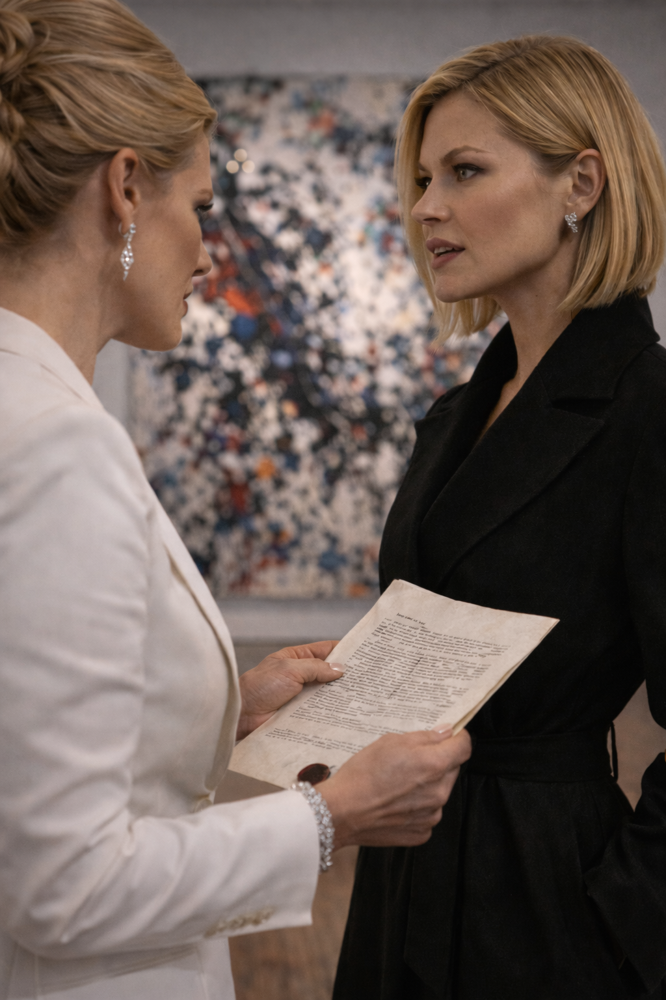

To dismantle a rigged system, you first have to become entirely invisible within it. The Scorpion understood this better than anyone breathing.
Born into a meticulous lineage of Savile Row tailors but destined for the bar, she had spent her early career in the London legal system—drafting the flawless, airtight contracts that senior partners took the credit for. But after her transition, she realized something profound: being a transgender woman in the hyper-masculine, ego-driven world of high finance was her ultimate cloaking device.
Men like Marcus Thorne or the cartel lieutenants often looked right past her, assuming she was a mid-level assistant or a boutique consultant. They didn't guard their tongues around her. They didn't hide their ledgers.
She used that invisibility to study their blind spots. She learned exactly where the bodies were buried, and more importantly, how the dirt was taxed. Eventually, she became the only lawyer in the underworld capable of sanitizing the Cartel’s most radioactive assets. The Scorpion didn't just know the law; she knew the exact pressure points of the men who believed they were above it.
The air in the private hangar at Sky Harbor was thin, smelling sharply of jet fuel, hot asphalt, and expensive leather.
Valentina Cruz stood by the wing of a sleek Gulfstream jet, her Tom Ford heels clicking like a relentless countdown against the Phoenix concrete. She was the Seductive Armor of the underworld—a criminal architect who usually controlled every variable in the room. But tonight, she was out of her depth. Across from her stood The Scorpion, draped in a structured Max Mara coat that moved in the desert wind like liquid shadow.
"The Feds froze the Barcelona accounts an hour ago," Valentina said, her voice like sandpaper on silk. She adjusted her Cartier Tank watch, her dark eyes tracking the distant, sweeping headlights of a black SUV patrolling the perimeter of the terminal. "I need the extraction finished before the sun hits the tarmac."
The Scorpion didn't look up from her encrypted glass tablet. She calmly unscrewed the cap of a Montblanc 149 fountain pen with a deliberate, surgical twist.
"You didn't hire me for speed, Valentina," The Scorpion murmured, her tone perfectly even, devoid of any panic. "You hired me for permanence."
"They're calling it a RICO sweep," Valentina hissed, stepping closer, the cartel's panic bleeding through her glamorous facade.
The Scorpion finally looked up. Her gaze was as sharp and cold as the steel on a Patek Philippe.
"Let them call it whatever they want," she replied softly. "I’ve already filed a counter-injunction through a shell corporation in Figueres. By the time the Department of Justice realizes the 'money' they froze is actually a debt-leveraged asset owned by a Spanish non-profit, your liquid capital will be sitting safely in a vault in Singapore."
She handed a heavy, cream-colored document to Valentina, holding out the gold-leaf fountain pen.
"Sign at the 'X'," The Scorpion instructed. "And don't use a ballpoint. It’s an insult to the contract."
Valentina took the pen. The "sting" had landed flawlessly. The assets were sanitized, the federal sweep was dismantled, and the law was, once again, entirely silent.
Seventy-two hours later, the chessboard shifted from a sun-baked runway to the pristine halls of Manhattan.

Camilla Sterling did not do back-alley meetings. When the CEO of Axiom Global Media wanted to broker a treasonous deal with the underworld's most elusive lawyer, she bought out the entire west wing of the Museum of Modern Art after hours.
She stood in the center of the stark, white gallery, staring up at a massive, violent canvas of abstract expressionism. Her asymmetrical suit caught the gallery lighting perfectly. She was the matriarch of the spotlight, a woman who controlled global narratives with a single broadcast.
"You are very difficult to locate," Camilla said, her voice echoing off the polished hardwood floors. She didn't turn around. She knew she wasn't alone.
"I'm standing right next to you, Ms. Sterling," a smooth, velvet voice replied.

Camilla turned. The Scorpion was there, standing effortlessly in her emerald-cut trench coat. She had made no sound on the hardwood. She simply existed in the blind spot between Camilla's peripheral vision and the art on the wall.
Camilla offered a predatory smile. "Your reputation precedes you. They say you can sanitize a cartel blood-diamond vault faster than my anchors can read a teleprompter."
"I don't sanitize anything," The Scorpion corrected. "I simply remind the federal government of their own jurisdictional loopholes. Law is just syntax, Camilla. I'm an editor."
"Then edit this," Camilla challenged, stepping closer. "Nicolás Reyes is a dead man. My father is preparing to authorize a Department of Defense drone strike on his compound in Mexico. The second that missile hits, the Department of Justice is going to seize every remaining shell company and shadow bank Obsidian owns."
Camilla walked slowly around The Scorpion, her heels clicking aggressively. "I know you hold the routing numbers. I know you manage the trusts. I want you to betray the Cartel. Route the remaining billions into Axiom’s European expansion funds before the DOJ drops the hammer. Work for me, and I ensure your name never appears on a federal indictment. Refuse, and tomorrow night at eight o'clock, Axiom News runs a prime-time exposé on the Ghost of Savile Row."

The Scorpion didn’t flinch. She reached into the interior pocket of her structured coat and pulled out a single, folded piece of thick archival paper. She held it out.
"What is this?" Camilla demanded, taking the paper.
"It is a preemptive transfer deed, executed four hours ago," The Scorpion said softly. Her venomous green eyes finally locked onto Camilla's. "You are threatening to expose my connection to Nicolás Reyes's assets. But legally, Nicolás Reyes doesn't own those assets anymore. The moment your father began threatening drone strikes, I triggered a poison pill clause in the Obsidian contracts."

Camilla's eyes scanned the document, her sharp features tightening as she read the dense legalese.
"Those billions don't belong to the Cartel, and they don't belong to the DOJ," The Scorpion whispered, her voice like ice water. "They belong to an irrevocable blind trust located in Zurich. A trust that, by pure coincidence, lists me as the sole executor. I didn't hide the money from the Feds, Camilla. I legally expropriated it."

The Scorpion took a step forward, completely unfazed by the media mogul's aura. "Run your exposé. Put my face on every screen in Times Square. The law doesn't care about public opinion; it cares about signatures. And right now, I am the only person on earth legally authorized to touch that capital. I don't need your protection. You need my permission."
The gallery was dead silent.
"So," The Scorpion smiled, the legal predator baring her fangs. "Would Axiom Media like to negotiate a legitimate loan from a Zurich trust, or should I leave you to the art?"